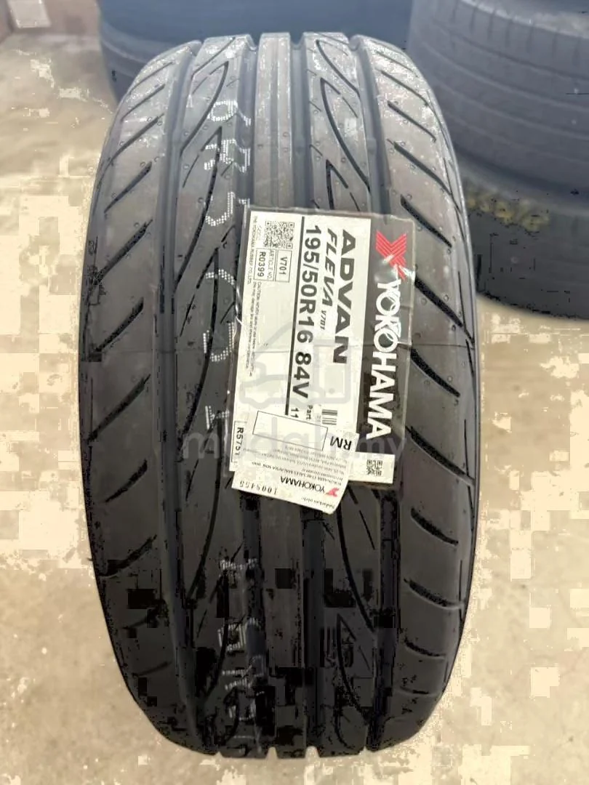

Yokohama Advan Fleva V701 195/50R16

RM 291.00
The Yokohama ADVAN Fleva V701 is a high-performance summer tyre designed for sporty driving, excellent wet and dry grip, responsive steering and precise handling. Its directional tread pattern helps improve water evacuation and reduce road noise, delivering a balance of sporty performance and everyday driving comfort.
Klang Hock Li Tyre Services Sdn Bhd, Klang, Selangor, Malaysia.
View live product details and enquire